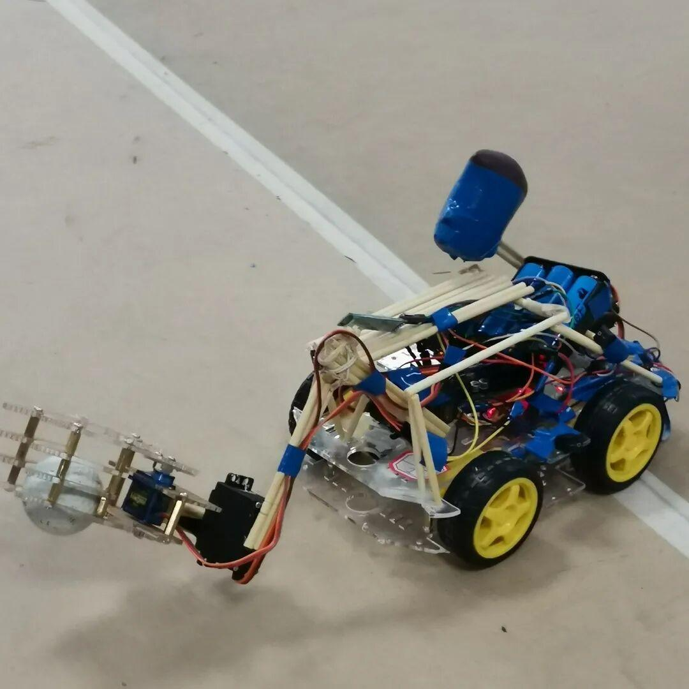
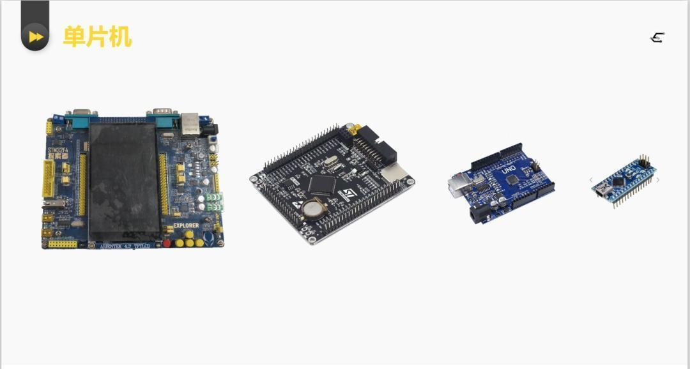
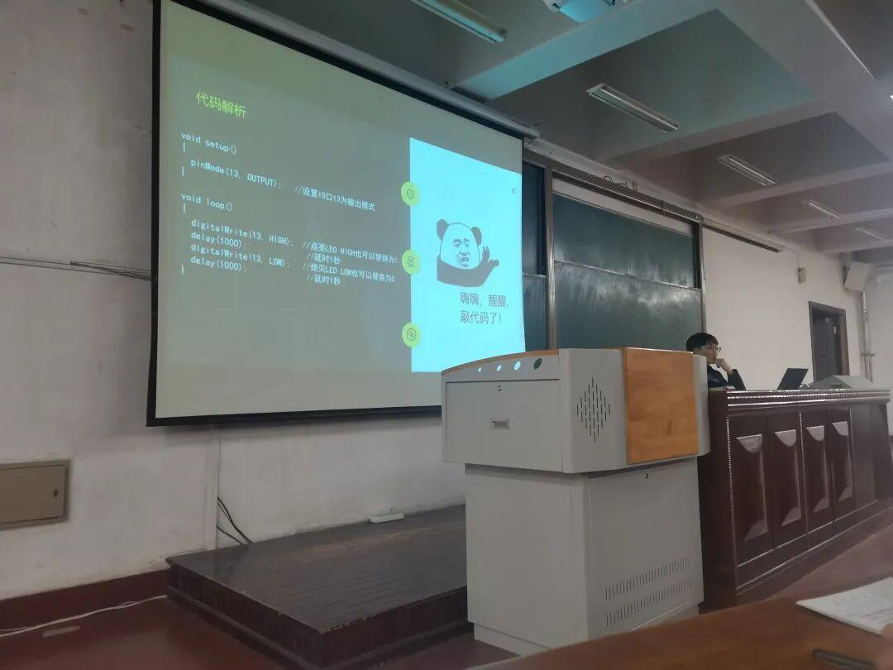
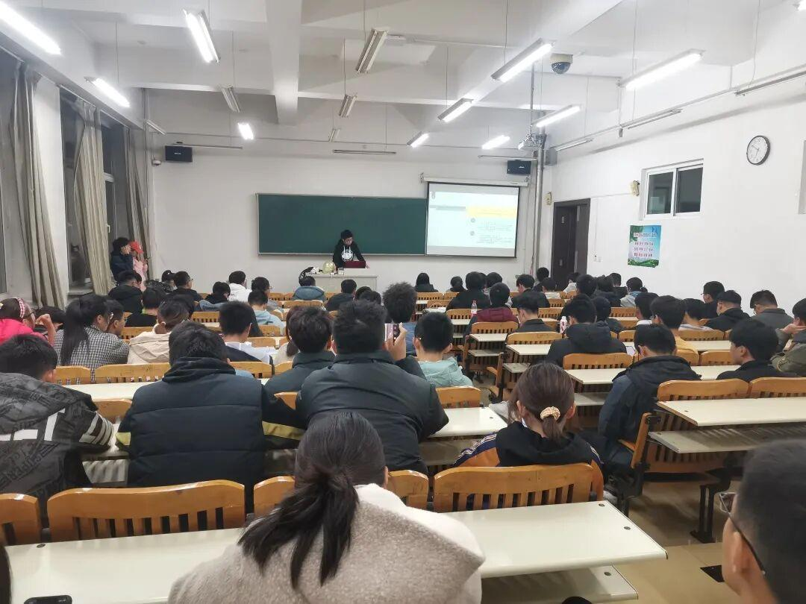

电协第一、二次教学圆满结束啦

因本学期课程紧张，本周在周五与周六两天进行了两次教学。
P1
第一次教学

第一次教学主要讲与单片机有关的基础知识。
课程分为认识单片机、用单片机点亮LED灯及常用物品清单三部分。在课程的最后，教学的学长还给出了参加即将到来的机器人大赛的必备清单！（有意向参加比赛的小萌新们要仔细查看哦！）

嗨嗨，醒醒，敲代码了！
P2
第二次教学
本次教学主要讲c语言与蓝牙小车的相关知识。
课程主要分为c语言基础知识讲解、蓝牙小车硬件讲解、蓝牙小车代码分析与串口打印四部分。

认真听讲ing
▽
本周的两次教学都是用单片机制作蓝牙小车必不可少的基础知识，如果有不明白的地方可以从沈理电协2020大群中下载ppt研究或询问群内学长学姐（不用担心，大佬很多，有问必答的那种哦）希望能为接下来同学们参加理工杯机器人大赛提供一定知识储备！
通过本周的教学，大家是不是已经跃跃欲试了？赶快行动起来吧！做一个蓝牙小车，打一场机器人比赛，赢一份自己的荣誉！


排版|辛学敏
文字|辛学敏
关注我们，了解更多资讯哦~